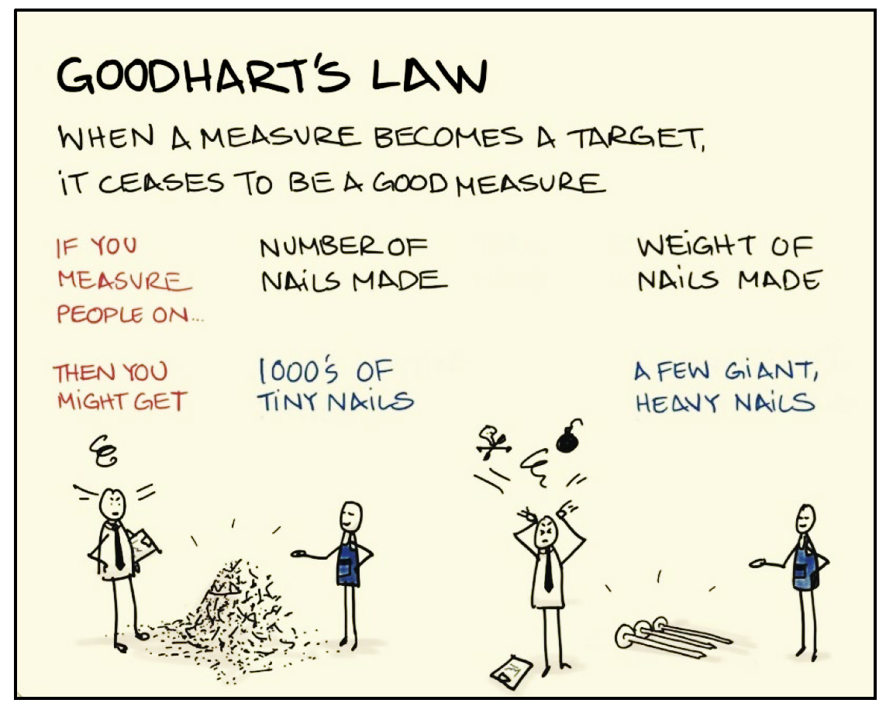

“Quando un indicatore diventa un target da massimizzare, smette di essere un buon indicatore” - Legge di Goodhart
“Studenti, docenti e personale amministrativo sembrano impegnati in un gioco individualmente razionale, ma socialmente distruttivo” - Langbein (2008)
Riassunto: Studentesse e studenti soddisfatti a fine corso ci rendono contenti. Ma la ricerca mostra che il costo della loro soddisfazione immediata è una minore efficacia didattica, mascherata con voti sempre più alti. Per il bene di studentesse e studenti, e della società in generale, dobbiamo smettere di interpretare i punteggi di soddisfazione immediata come indicatori di qualità.
I discorsi sui punteggi di soddisfazione di studentesse e studenti ai corsi universitari sono un ritornello continuo. Durante i Consigli di Corso di Studi e i Consigli di Dipartimento questi punteggi si discutono spesso e ampiamente, non solo per individuare criticità, ma anche per confrontarsi con altre realtà e discutere come si possa arrivare ancora più in alto. L’anno scorso, per esempio, l’autore di questo post ricevette un attestato di merito dalla propria università per aver conseguito un punteggio di “Soddisfazione Complessiva” comparativamente elevato all’interno del proprio Corso di Laurea. La forte enfasi messa sui punteggi di soddisfazione di studentesse e studenti, e specialmente gli incentivi morali e materiali a massimizzarli, può avere conseguenze negative paradossalmente proprio per studentesse e studenti. La letteratura scientifica in merito, come mostrato sotto, conferma in pieno il rischio, la cui considerazione sorge comunque da un’impressione soggettiva: chi scrive, infatti, insegna all’università, e vive direttamente su di sé il conflitto di incentivi (diciamolo pure: il conflitto di interessi) tra massimizzazione dell’efficacia didattica e massimizzazione dei punteggi di soddisfazione.
Chiunque faccia docenza sa quanto la soddisfazione di studentesse e studenti si giochi su un equilibrio delicato tra qualità degli obiettivi didattici e condiscendenza, che ben dosata può essere anche un elemento positivo. Bisogna decidere se aggiungere un argomento difficile o fare un ripasso in più, se aumentare o ridurre il materiale per lo studio individuale, se verificare la capacità di sforzo riflessivo o solo la memorizzazione, se interpretare in modo più o meno severo un errore commesso in un esame per dare una sufficienza o no. Per chi insegna da pochi anni, la costruzione di questo equilibrio è particolarmente critica e fisiologicamente esposta a influenze esterne.
L’adagio dell’economista britannico Goodhart (1975) citato all’inizio (l’aforisma in realtà è una celebre parafrasi successiva), è noto ben oltre il campo dell’economia. Nel contesto originale, denunciava il fatto che una misura quale l’inflazione potesse sì essere presa a indicatore della stabilità economica, ma che una volta fatta diventare target da ottimizzare e controllare politicamente avrebbe smesso di essere l’indicatore che era, e si sarebbe accompagnata a effetti distorsivi. La legge di Goodhart si può riscontrare in innumerevoli campi. Per citare un solo altro esempio, peraltro analogo al nostro, dati empirici suggeriscono che l’importanza della soddisfazione riportata dai pazienti ospedalieri come indicatore di reputazione e qualità nel sistema sanitario statunitense potrebbe avere effetti negativi, associandosi a prassi non direttamente necessarie alla cura (eccessi di prescrizioni, trattamenti non necessari), portando a vari effetti negativi tra cui perfino un aumento della mortalità dei pazienti stessi (e.g., Fenton et al. 2012).
In ambito didattico, l’applicazione della legge di Goodhart è del tutto analoga a quanto appena detto, solo con esiti un po’ meno gravi (almeno per la sopravvivenza). La “Soddisfazione Complessiva” di studentesse e studenti potrebbe anche essere un buon indicatore della qualità dell’offerta formativa (ma come mostrerò in seguito, l’evidenza suggerisce che non lo sia affatto), ma smetterebbe in ogni caso di esserlo una volta trasformato in un target che il personale docente è incentivato a ottimizzare. La ragione è che qualsiasi indicatore riflette non solo ciò che deve misurare, ma anche altri fattori, talvolta direttamente dannosi rispetto agli obiettivi desiderati. Ma quando si è incentivati a massimizzare quell’indicatore, si farà il possibile per “ottimizzare” tutto, utile o dannoso che sia. Con riferimento al delicato equilibrio menzionato sopra, ciò significherà essere un po’ più accondiscendenti, preferire un ripasso in più anziché introdurre un argomento difficile, limare un po’ il materiale per lo studio individuale, propendere per la memorizzazione anziché per lo sforzo riflessivo, far capire ai discenti che si tenderà a interpretazioni più benevole in certi casi all’esame, e così via. Un’ovvia considerazione economica suggerisce che si inizierà con l’ottimizzare i fattori che hanno il minor costo. Se i docenti non si piegheranno a questo gioco, sarà solo per un surplus di etica individuale, ovvero per lo sforzo di rimanere indifferenti agli incentivi.
Come già detto, gli effetti distorsivi si applicherebbero anche a buoni indicatori. Nel caso della “Soddisfazione Complessiva” abbiamo a che fare, oltretutto, con un cattivo indicatore. Una meta-analisi di qualche anno fa suggerisce che il rating medio di soddisfazione di un corso sia predittiva al più all’1% della varianza dell’effettiva preparazione accademica raggiunta, così come successivamente valutata in modo indipendente (Uttl, White, e Gonzalez 2017). A complicare le cose, un’altra rassegna elenca svariati aspetti teoricamente irrilevanti, quali l’etnia, l’attrattività fisica, il genere, l’orientamento sessuale del/la docente, o la percezione della difficoltà del corso e la previsione di ricevere un voto elevato, come predittori della “Soddisfazione” riportata da studentesse e studenti (Spooren, Brockx, e Mortelmans 2013). Si veda anche Boring e Ottoboni (2016) in merito. Perfino l’offerta di cioccolatini a lezione si è trovata avere un effetto, addirittura di diversi decimi di deviazione standard, sui punteggi medi di “Soddisfazione” (Uttl 2021). Per capirne la portata, offrire cioccolatini a lezione potrebbe avere un impatto sulla soddisfazione di studentesse e studenti più forte di quanto si ottenga offrendo una didattica effettivamente di alta qualità.
Diversamente dai cioccolatini, comunque, diversi fattori che aumentano la soddisfazione non sono neutri, e hanno conseguenze dannose ben note secondo la letteratura sulla didattica. Per esempio, l’incentivo dato alla “Soddisfazione” si associa a una progressiva inflazione dei voti agli esami e a una riduzione del carico di studio richiesto a studentesse e studenti (e.g., Stroebe 2020), Inoltre, docenti meno competenti puntano maggiormente a una soddisfazione immediata dei discenti a scapito della loro preparazione oggettivamente riscontrata nel proseguo del corso di studi (Carrell e West 2010). Questi effetti sono discussi estesamente anche da Uttl (2021). Peraltro, il progressivo aumento dei voti medi, di pari passo con l’enfasi data alla “Soddisfazione”, è un fenomeno noto da tempo (Johnson 2003). Il pericolo insito in questo “gioco” è discusso anche da Langbein, citata all’inizio (Langbein 2008, 417).
Come detto, tutto questo non fa che corroborare il dato soggettivo evidenziato nei primi paragrafi di questo testo. Come parere personale, aggiungo che la crescente enfasi sulla “Soddisfazione” sembra il derivato di un clima culturale in cui studentesse e studenti sono percepiti sempre più come clienti da soddisfare, anziché percepire la loro formazione come prodotto che l’Università pubblica deve offrire anzitutto alla società esterna intesa come vero stakeholder, che paga le tasse e finanzia la formazione universitaria. Questa impressione è in effetti discussa da tempo anche in letteratura (e.g., Delucchi e Korgen 2002), e stimola una considerazione sugli ulteriori effetti indesiderati della legge di Goodhart nel momento in cui studentesse e studenti si accorgano del loro potere negoziale nei confronti dei docenti, configurando un conflitto di interesse tra i loro stessi obiettivi a breve e a lungo termine. Alla fine chi ci perde sono studentesse, studenti, e la società at large con tutti i suoi stakeholder. Il corpo docente, per adesso, ci perde solo la motivazione. Alla lunga, però, tutte e tutti ci perderemo la credibilità dell’istituzione universitaria.

Possiamo usare correttamente i punteggi di soddisfazione?
Qualche anno fa, chi scrive aveva conferito brevemente con personale degli uffici che si occupavano della valutazione della qualità della didattica. La persona di riferimento rassicurava che i punteggi: 1) erano essenzialmente feedback utili a segnalare casi problematici; 2) avevano un valore essenzialmente qualitativo; 3) l’indicatore “Soddisfazione complessiva” andava preso come mera impressione globale, perché gli indicatori davvero utili erano quelli dettagliati e specifici. Così sarebbe andato bene, si potrebbe tornare a quel modello. Oggi, invece, ci troviamo con qualcosa di più simile a una gara al percentile più alto, in cui l’indicatore “Soddisfazione complessiva” (cioè l’impressione globale, non gli aspetti analitici) è centrale e ha un significato totalmente quantitativo. Così non va bene.
Su cosa premiare ricercatrici e ricercatori? Farlo tenendo conto delle Opinioni di studentesse e studenti, considerando indicatori che siano validi, e senza incorrere in effetti distorsivi dopo avere introdotto gli incentivi, è forse impossibile (legge di Goodhart!). In generale, andrebbero favoriti indicatori di dettaglio, analitici e pensati per essere poco suscettibili di effetti distorsivi. Purtroppo, molti degli attuali indicatori di dettaglio si discostano poco dal concetto generale di soddisfazione (menzionano “interesse”, “stimolo”, “motivazione”, “chiarezza”). Si provano qui a suggerire alcuni indicatori concettualmente alternativi che potrebbero raccogliere più informazione:
Quanta conoscenza ritiene di avere acquisito rispetto a quanto sapeva già prima?
Quanto ritiene che il corso abbia modificato o aggiornato la sua visione della materia studiata?
Quanto il docente ha chiarito l’importanza dei contenuti del corso per possibili applicazioni professionali? (eventualmente da limitare a corsi magistrali, da correggere per una baseline, e/o da limitare a insegnamenti che il corso di laurea ritiene maggiormente professionalizzanti)
studentesse e studenti potrebbero certo non avere una visione abbastanza matura per rispondere accuratamente, e anche questi indicatori sarebbero suscettibili di distorsioni (ad esempio, correre a presentare argomenti originali e insoliti ma scientificamente non consolidati), ma avrebbero almeno un significato culturale: far riflettere e spostare il focus dalla soddisfazione immediata alla conoscenza acquisita e alle prospettive future. In alternativa, si dovrebbe prevedere un’indagine della preparazione degli studenti che sia indipendente dal docente che ha tenuto il corso, e premiare i docenti che abbiano preparato meglio studentesse e studenti in base a criteri terzi, ma questo è certo più oneroso. Infine, un modo semplice per premiare ricercatrici e ricercatori, laddove vi sia disponibilità economica una tantum o strutturale, sarebbe semplicemente offrire un compenso per coloro che abbiano svolto negli anni un maggior numero medio di ore d’insegnamento e/o di sessioni d’esame, fermo restando il vincolo tassativo a non superare il monte ore annuale massimo per la didattica frontale. Da questo punto di vista (ma l’impressione potrebbe essere parziale) mi sembra comunque che il nostro Ateneo patavino sia virtuoso e non ecceda nel carico didattico ai giovani oltre quanto consente la Legge, ovvero non cerca deroghe come invece si vede talvolta altrove.
Infine, qualche considerazione su ciò di cui ha realmente bisogno un giovane alle prime esperienze con l’insegnamento. Per la didattica, si potrebbe certamente fornire più guida negli aspetti fondamentali dello svolgimento di una lezione, della preparazione dei materiali, della costruzione di un corso, delle politiche con cui si gestiscono e ci si rapporta a studentesse, studenti, e alle loro richieste talvolta imprevedibili. Tutte queste cose ora sembrano date ampiamente per scontate, ma vengono invece apprese in un difficile percorso per prove-ed-errori, trovandosi quasi all’improvviso a dover gestire molte decine di ore di insegnamento. In qualche caso fortunato si riceve il provvidenziale mentoring di colleghe/i più anziane/i, bontà loro. In generale, ci si sente soli. Più comunicazione, trasmissione, e solidarietà tra docenti a diversi livelli di carriera sarebbero fondamentali.